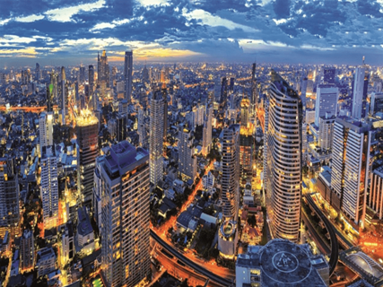

Melina w Pilonie
Opuszczony i niedokończony dom na wzgórzu w Pilonie. tzw. Melina była częstym
miejscem spotakń w celu alkoholizacji

Pilońska melina od frontu
Opis
Była to ekskluzywna willa budowania na zlecenie sznycmilionera, jednak z powodu braków środków budowa została wstrzymana a posesja opustoszała. Przez lata dom stał pusty, a okoliczna młodzież po trochu wyniszczała go, aż do momentu kiedy miejsce to stało się centrum chlania dla pilońskich żuli. Eksploatacja tego miejsca skończyła się dopiero w 2021 roku, a główną przyczyną opuszczenia tego miejsca były liczne gniazda szerszeni i innych stworów np. sznycos.Ważne wydarzenia
- 1 Gril piloński
- 2 Gril piloński
- 3 Gril piloński
- 4 Gril piloński
- 5 Gril piloński
- 6 Gril piloński
- 7 Gril piloński
- 8 Gril piloński
- 9 Gril piloński
- 10 Gril piloński
- 11 Gril piloński
- 12 Gril piloński
- 13 Gril piloński
Ciekawostki
- W 2022 dom przejął nowy właściciel, który względnie posprzątał posesje, jednak prac budowlanych nie wznowiono